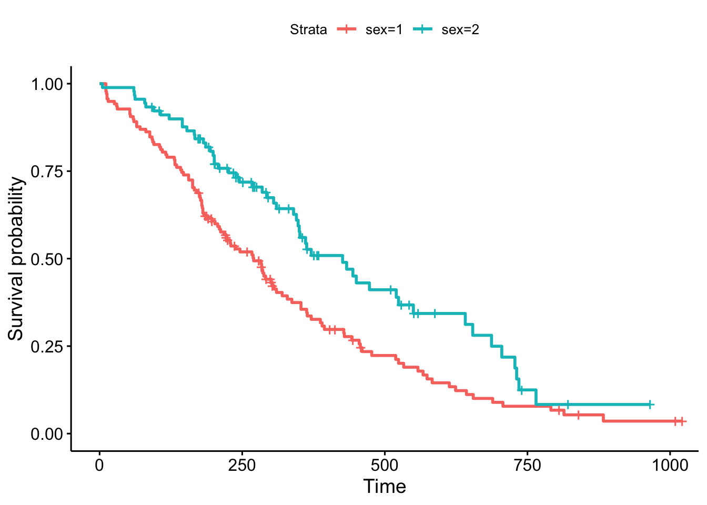

Chapter 2 Projects
2.0.1 NOTES ON VISUALS
pre attentive principles, colurs, shape, size etc.
GESTALT principles
why data visualization is needed with summary statistics. Data patterns may be different although means may be different
exploratory graphs: may be good for people with some background. filtering and some control may be given to audience
explanatory graphs: may be good for people with no backgroung. made simple
2.1 Elastic Net Model
Elastic Net is a regularization technique that combines both L1 (Lasso) and L2 (Ridge) regularization penalties in a linear regression model. This technique is commonly used in machine learning, especially when dealing with high-dimensional datasets or situations where some of the features are highly correlated.
In elastic net regularization, the objective function is a combination of the L1 and L2 regularization terms along with the linear regression loss. The regularization strength is controlled by two hyperparameters, often denoted as α α (alpha) and λ λ (lambda):
α α controls the mixing between L1 and L2 regularization. When α = 0 α=0, it is equivalent to Ridge regression, and when α = 1 α=1, it is equivalent to Lasso regression. Any value in between (0 and 1) allows for a mixture of both. λ λ controls the overall strength of the regularization.
In R, you can fit an elastic net model using the glmnet package. Here’s a brief example:
# Install and load the glmnet package if not already installed
# install.packages("glmnet")
library(glmnet)
# Generate some example data
set.seed(42)
n <- 100
p <- 10
X <- matrix(rnorm(n * p), nrow = n, ncol = p)
beta_true <- c(2, 0, 1, 0, 0, 3, 0, 0, -2, 0)
y <- X %*% beta_true + rnorm(n)
# Fit an elastic net model
alpha <- 0.5 # You can adjust alpha to control the mixture of L1 and L2 regularization
lambda <- 0.1 # You can adjust lambda to control the overall strength of regularization
enet_model <- cv.glmnet(X, y, alpha = alpha, lambda = lambda)2.2 Survival Analysis
2.2.1 References
Web Sources
A short course on Survival Analysis applied to the Financial Industry
An Introduction to Survival Statistics: Kaplan-Meier Analysis
pdf references
2. Introduction to Survival Analysis in Practice
3. Chapter 7 - Survival Models
2.2.2 Time to event analysis
Time to event analysis has also been used widely in the social sciences where interest is on analyzing time to events such as job changes, marriage, birth of children and so forth.
There are certain aspects of survival analysis data, such as censoring and non-normality, that generate great difficulty when trying to analyze the data using traditional statistical models such as multiple linear regression.
The non-normality aspect of the data violates the normality assumption of most commonly used statistical model such as regression or ANOVA, etc.
A censored observation is defined as an observation with incomplete information. When an observation is right censored it means that the information is incomplete because the subject did not have an event during the time that the subject was part of the study.
The point of survival analysis is to follow subjects over time and observe at which point in time they experience the event of interest.
It often happens that the study does not span enough time in order to observe the event for all the subjects in the study. This could be due to a number of reasons. Perhaps subjects drop out of the study for reasons unrelated to the study (i.e. patients moving to another area and leaving no forwarding address).
The common feature of all of these examples is that if the subject had been able to stay in the study then it would have been possible to observe the time of the event eventually.
Type of censoring - Right truncation - Right censoring - Left truncation - Left censoring
In survival analysis, censoring refers to situations where the event of interest (e.g., death, failure, or another outcome) is not observed for some subjects during the study period. There are two main types of censoring: right truncation and right censoring.
- Right Truncation:
- Definition: Right truncation occurs when individuals enter the study at different times, and some individuals have already experienced the event of interest before the study begins.
- Example: Consider a study on the time until a machine fails. If the study starts at a certain date, and some machines have already failed before that date, those machines are considered right-truncated because their failure times are not observed in the study.
- Right Censoring:
- Definition: Right censoring occurs when individuals are followed for a certain period, but the event of interest does not occur for some of them by the end of the study.
- Example: In a clinical trial studying the time until disease recurrence, if a patient has not experienced recurrence by the end of the study period or is lost to follow-up, their survival time is right-censored. The exact time of recurrence is not known for these patients.
In summary, right truncation involves incomplete observation due to some subjects entering the study late, whereas right censoring occurs when the event of interest has not occurred for some subjects by the end of the study. Both types of censoring are common in survival analysis and need to be appropriately accounted for in statistical models to obtain unbiased estimates of survival probabilities and hazard rates.
What is survival data?
Time-to-event data that consist of a distinct start time and end time.
Examples from cancer • Time from surgery to death • Time from start of treatment to progression • Time from response to recurrence
Examples from other fields
Time-to-event data are common in many fields including, but not limited to • Time from HIV infection to development of AIDS • Time to heart attack • Time to onset of substance abuse • Time to initiation of sexual activity • Time to machine malfunction
Types of censoring
A subject may be censored due to: • Loss to follow-up • Withdrawal from study • No event by end of fixed study period
Specifically these are examples of right censoring.
Left censoring and interval censoring are also possible, and methods exist to analyze this type of data.
2.2.3 Kaplan-Meier
The Kaplan-Meier curve is commonly used to analyze time-to-event data, such as the time until death or the time until a specific event occurs. For this, the Kaplan Meier curve graphically represent the survival rate or survival function. Time is plotted on the x-axis and the survival rate is plotted on the y-axis.
2.2.3.1 Survival rate
Suppose you’re a dental technician and you want to study the “survival time” of a filling in a tooth.
So your start time is the moment when a person goes to the dentist for a filling, and your end time, the event, is the moment when the filling breaks. The time between these two events is the focus of your study.
For example, you may be interested in the probability that your filling will last longer than 5 years.
To do this, you read off the value at 5 years on the graph, which is the survival rate.
At 5 years, the Kaplan-Meier curve gives you a value of 0.7.
So there is a 70% chance that your filling will last longer than 5 years.2.2.3.2 Interpreting the Kaplan-Meier curve
The Kaplan-Meier curve shows the cumulative survival probabilities.
A steeper slope indicates a higher event rate (death rate) and therefore a worse survival prognosis. A flatter slope indicates a lower event rate and therefore a better survival prognosis. The curve may have plateaus or flat areas, indicating periods of relatively stable survival.
If there are multiple curves representing different groups, you can compare their shapes and patterns. If the curves are parallel, it suggests that the groups have similar survival experiences. If the curves diverge or cross, it indicates differences in survival between the groups.
At specific time points, you can estimate the survival probability by locating the time point on the horizontal axis and dropping a vertical line to the curve. Then, read the corresponding survival probability from the vertical axis.
2.2.3.3 Calculating the Kaplan-Meier curve
Let’s say the filling lasted 3 years for the first subject, 4 years for the second subject, 4 years for the third subject, and so on.

Let’s assume that none of the cases are “censored”. The data are already arranged so that the shortest survival time is at the top and the longest at the bottom.
Now we create a second table that we can use to draw the Kaplan-Meier curve. To do this, we look at the time points in the left table and add the time zero. So we have the time points 0, then 3, 4, 6, 7, 8 11 and 13. In total we have 10 subjects.
Now we look at how many fills break out at each time. We enter this in the column m. So at time 0, no fillings were broken out. After 3 years, there were one broken fillings, after 4 years there were two, after 6 years there was one. We now do the same for all the other times.
Next, we look at the number of cases that have survived to the time plus the number of cases where the event occurs at the exact time. We enter this in column n.
So n is the number of cases that survived to that point, plus the people who dropped out at that exact point.
After zero years we still have all 10 people. After 3 years, we get 10 for n, 9 people still have their fill intact, and one person’s fill broke out exactly after 3 years.
The easiest way to get n is to take the previous n value and subtract the previous m value. So we get 10 - 1 equals 9. Then 9 minus 2 equals 7, 7 - 1 equals 6… and so on and so forth.
From column n we can now calculate the survival rates. To do this, we simply divide n by the total number, i.e. 10.
So 10 divided by 10 is equal to 1, 9 divided by 10 is equal to 0.9, 7 divided by 10 is equal to 0.7. Now we do the same for all the others.
2.2.3.4 Draw Kaplan Meier curve
We can now plot the Kaplan-Meier curve. At time 0 we have a value of 1, after 3 years we have a value of 0.9 or 90%. After 4 years we get 0.7, after 6 years 0.6 and so on and so forth.
From the Kaplan-Meier curve, we can now see what percentage of the filling has not broken out after a certain time.
2.2.3.5 Censored data
Censored data has been added to the example in these three places.

We now need to enter this data into our Kaplan-Meier curve table. We do this as follows: We create our m exactly as we did before, looking at how many cases failed at each time point.
Now we add a column q, in which we enter how many cases were censored at each time.
Note that the time at which each censored case occurred does not get its own row, but is assigned to the previous time.
Let’s look at this case. The censoring took place at time 9. In this table, however, there is no event with nine years and we also don’t add it. The person is added at time 8.
We can now re-calculate the values for the survival curve. If we have censored data, this is a little more complex.
For this, we write down the values in the first step. We get these values by calculating n-m/n. In the third row, for example, we get the value 10/12 with 12-2 by 12.
The calculation of the real value is iterative. To do this, we multiply the result from the previous row by the value we have just calculated.
So, in the first row we get 1, now we calculate 12/13 times 1, which is equal to 0.923. In the next row we calculate 10/12 times 0.923 and get a value of 0.769. We take this value again for the next row.
We do this for all the rows. We can then plot the Kaplan-Meier curve with this data in the same way as before.
2.2.3.6 Comparing different groups
If you are comparing several groups or categories (e.g. treatment groups), the Kaplan-Meier curve consists of several lines, each representing a different group. Each line shows the estimated survival rate for that particular group. To test whether there is a statistically significant difference between the groups, the log-rank test can be used.
If you have several factors and you want to see if they have an effect on the curve, you can calculate a Log Rank Test or calculate a Cox Regression here on DATAtab.
2.2.3.7 Kaplan-Meier curve assumptions
Random or Non-informative censoring: This assumption states that the occurrence of censoring is unrelated to the likelihood of experiencing the event of interest. In other words, censoring should be random and not influenced by factors that affect the event outcome. If censoring is not non-informative, the estimated survival probabilities may be biased.
Independence of censoring: This assumption assumes that the censoring times of different individuals are independent of each other. This means that the occurrence or timing of censoring for one participant should not provide any information about the censoring times for other participants.
Survival probabilities do not change over time: The Kaplan-Meier curve assumes that the survival probabilities estimated at each time point remain constant over time. This assumption may not be valid if there are time-varying factors or treatments that can influence survival probabilities.
No competing risks: The Kaplan-Meier curve assumes that the event of interest is the only possible outcome and there are no other competing events that could prevent the occurrence of the event being studied. Competing events can include other causes of death or events that render the occurrence of the event of interest impossible.
2.2.4 The basics of Survival Analysis
library(knitr)
library(dplyr)
library(survival)
library(ggplot2)
library(tibble)
# devtools::install_github("zabore/ezfun")
ezfun::set_ccf_palette("contrast")## <environment: R_GlobalEnv>Survival data are time-to-event data that consist of a distinct start time and end time.
Examples from cancer:
- Time from surgery to death
- Time from start of treatment to progression
- Time from response to recurrence
- Time-to-event data are common in many other fields.
Some other examples include:
- Time from HIV infection to development of AIDS
- Time to heart attack
- Time to onset of substance abuse
- Time to initiation of sexual activity
- Time to machine malfunction
Because time-to-event data are common in many fields, it also goes by names besides survival analysis including:
- Reliability analysis
- Duration analysis
- Event history analysis
- Time-to-event analysis
A key feature of survival data is censoring.
Censoring occurs if a subject has not experienced the event of interest by the end of data collection.
A subject may be censored due to:
- Loss to follow-up
- Withdrawal from study
- No event by end of fixed study period
Specifically these are examples of right censoring.
Left censoring and interval censoring are also possible, and methods exist to analyze these types of data, but this tutorial will be focus on right censoring.
To illustrate the impact of censoring, suppose we have the following data:

How would we compute the proportion who are event-free at 10 years?
- Subjects 6 and 7 were event-free at 10 years.
- Subjects 2, 9, and 10 had the event before 10 years.
- Subjects 1, 3, 4, 5, and 8 were censored before 10 years, so we don’t know whether they had the event or not at 10 years. But we know something about them - that they were each followed for a certain amount of time without the event of interest prior to being censored.
Survival analysis techniques provide a way to appropriately account for censored patients in the analysis.
# install.packages(c("lubridate", "ggsurvfit", "gtsummary", "tidycmprsk"))
library(lubridate)
library(ggsurvfit)
library(gtsummary)
library(tidycmprsk)
# devtools::install_github("zabore/condsurv")
library(condsurv)The lung dataset
Throughout this section, we will use the lung dataset from the survival package as example data. The data contain subjects with advanced lung cancer from the North Central Cancer Treatment Group. We will focus on the following variables throughout this tutorial:
**time:** Observed survival time in days
**status:** censoring status 1=censored, 2=dead
**sex:** 1=Male, 2=Female## time status sex
## 1 306 2 1
## 2 455 2 1
## 3 1010 1 1
## 4 210 2 1
## 5 883 2 1
## 6 1022 1 1Note that the status is coded in a non-standard way in this dataset. Typically you will see 1=event, 0=censored. Let’s recode it to avoid confusion:
lung1 <-
lung %>%
mutate(
status = recode(status, '1' = 0, '2' = 1)
)
head(lung[, c("time", "status", "sex")])## time status sex
## 1 306 2 1
## 2 455 2 1
## 3 1010 1 1
## 4 210 2 1
## 5 883 2 1
## 6 1022 1 1Now we have:
time: Observed survival time in days
status: censoring status 0=censored, 1=dead
sex: 1=Male, 2=FemaleNote: the Surv() function in the {survival} package accepts by default TRUE/FALSE, where TRUE is event and FALSE is censored; 1/0 where 1 is event and 0 is censored; or 2/1 where 2 is event and 1 is censored. Please take care to ensure the event indicator is properly formatted.
Calculating survival times
Data will often come with start and end dates rather than pre-calculated survival times. The first step is to make sure these are formatted as dates in R.
Let’s create a small example dataset with variables sx_date for surgery date and last_fup_date for the last follow-up date:
date_ex <-
tibble(
sx_date = c("2007-06-22", "2004-02-13", "2010-10-27"),
last_fup_date = c("2017-04-15", "2018-07-04", "2016-10-31")
)
date_ex## # A tibble: 3 × 2
## sx_date last_fup_date
## <chr> <chr>
## 1 2007-06-22 2017-04-15
## 2 2004-02-13 2018-07-04
## 3 2010-10-27 2016-10-31We see these are both character variables, but we need them to be formatted as dates.
We will use the {lubridate} package to work with dates. In this case, we need to use the ymd() function to change the format, since the dates are currently in the character format where the year comes first, followed by the month, and followed by the day.
date_ex1 <-
date_ex %>%
mutate(
sx_date = ymd(sx_date),
last_fup_date = ymd(last_fup_date)
)
date_ex1## # A tibble: 3 × 2
## sx_date last_fup_date
## <date> <date>
## 1 2007-06-22 2017-04-15
## 2 2004-02-13 2018-07-04
## 3 2010-10-27 2016-10-31Now that the dates are formatted, we need to calculate the difference between start and end dates in some units, usually months or years. Using the {lubridate} package, the operator %--% designates a time interval, which is then converted to the number of elapsed seconds using as.duration() and finally converted to years by dividing by dyears(1), which gives the number of seconds in a year.
date_ex2 <-
date_ex1 %>%
mutate(
observed_yrs = as.duration(sx_date %--% last_fup_date) / dyears(1)
)
date_ex2## # A tibble: 3 × 3
## sx_date last_fup_date observed_yrs
## <date> <date> <dbl>
## 1 2007-06-22 2017-04-15 9.82
## 2 2004-02-13 2018-07-04 14.4
## 3 2010-10-27 2016-10-31 6.012.2.4.1 Creating survival objects and curves
The Kaplan-Meier method is the most common way to estimate survival times and probabilities. It is a non-parametric approach that results in a step function, where there is a step down each time an event occurs.
Lets see the data again:
## time status
## 1 306 2
## 2 455 2
## 3 1010 1
## 4 210 2
## 5 883 2The Surv() function from the {survival} package creates a survival object for use as the response in a model formula. There will be one entry for each subject that is the survival time, which is followed by a + if the subject was censored.
Let’s look at the first 10 observations:
## [1] 306 455 1010+ 210 883 1022+ 310 361 218 166We see that subject 1 had an event at time 306 days, subject 2 had an event at time 455 days, subject 3 was censored at time 1010 days, etc.
The survfit() function creates survival curves using the Kaplan-Meier method based on a formula. Let’s generate the overall survival curve for the entire cohort, assign it to object s1, and look at the structure using str():
## List of 16
## $ n : int 228
## $ time : num [1:186] 5 11 12 13 15 26 30 31 53 54 ...
## $ n.risk : num [1:186] 228 227 224 223 221 220 219 218 217 215 ...
## $ n.event : num [1:186] 1 3 1 2 1 1 1 1 2 1 ...
## $ n.censor : num [1:186] 0 0 0 0 0 0 0 0 0 0 ...
## $ surv : num [1:186] 0.996 0.982 0.978 0.969 0.965 ...
## $ std.err : num [1:186] 0.0044 0.00885 0.00992 0.01179 0.01263 ...
## $ cumhaz : num [1:186] 0.00439 0.0176 0.02207 0.03103 0.03556 ...
## $ std.chaz : num [1:186] 0.00439 0.0088 0.00987 0.01173 0.01257 ...
## $ type : chr "right"
## $ logse : logi TRUE
## $ conf.int : num 0.95
## $ conf.type: chr "log"
## $ lower : num [1:186] 0.987 0.966 0.959 0.947 0.941 ...
## $ upper : num [1:186] 1 1 0.997 0.992 0.989 ...
## $ call : language survfit(formula = Surv(time, status) ~ 1, data = lung)
## - attr(*, "class")= chr "survfit"n: There are 228 subjects in the data.
time: Distinct time points.
n.risk: Number of cases that have survived to the time plus the number of cases where the event occurs at the exact time.
n.event: Number of event happened at the time.
2.2.4.2 Kaplan-Meier plots/Curves
The Kaplan Meier curve graphically represent the survival rate or survival function.
We will use the {ggsurvfit} package to generate Kaplan-Meier plots.
This package aims to ease plotting of time-to-event endpoints using the power of the {ggplot2} package. See http://www.danieldsjoberg.com/ggsurvfit/index.html for details.
Note: alternatively, survival plots can be created using base R or the {survminer} package.
The {ggsurvfit} package works best if you create the survfit object using the included ggsurvfit::survfit2() function, which uses the same syntax to what we saw previously with survival::survfit().
The ggsurvfit::survfit2() tracks the environment from the function call, which allows the plot to have better default values for labeling and p-value reporting.
survfit2(Surv(time, status) ~ 1, data = lung) %>%
ggsurvfit() +
labs(
x = "Days",
y = "Overall survival probability"
)
The default plot in ggsurvfit() shows the step function only.
We can add the confidence interval using add_confidence_interval():
survfit2(Surv(time, status) ~ 1, data = lung) %>%
ggsurvfit() +
labs(
x = "Days",
y = "Overall survival probability"
) +
add_confidence_interval()Typically we will also want to see the numbers at risk in a table below the x-axis.
We can add this using add_risktable():
survfit2(Surv(time, status) ~ 1, data = lung) %>%
ggsurvfit() +
labs(
x = "Days",
y = "Overall survival probability"
) +
add_confidence_interval() +
add_risktable()Plots can be customized using many standard {ggplot2} options.
2.2.4.3 Estimating x-year survival
One quantity often of interest in a survival analysis is the probability of surviving beyond a certain number of years, x.
For example, to estimate the probability of surviving to 1 year, use summary with the times argument
(Note: the time variable in the lung data is actually in days, so we need to use times = 365.25)
## Call: survfit(formula = Surv(time, status) ~ 1, data = lung)
##
## time n.risk n.event survival std.err lower 95% CI upper 95% CI
## 365 65 121 0.409 0.0358 0.345 0.486We find that the 1-year probability of survival in this study is 41%.The associated lower and upper bounds of the 95% confidence interval are also displayed.
The 1-year survival probability is the point on the y-axis that corresponds to 1 year on the x-axis for the survival curve.

What happens if you use a “naive” estimate? Here “naive” means that the patients who were censored prior to 1-year are considered event-free and included in the denominator.
121 of the 228 patients in the lung data died by 1 year so the “naive” estimate is calculated as:
\[(1−\frac{121}{228})×100=47\%\]
You get an incorrect estimate of the 1-year probability of survival when you ignore the fact that 42 patients were censored before 1-year.
Recall the correct estimate of the 1-year probability of survival, accounting for censoring using the Kaplan-Meier method, was 41%.
Ignoring censoring leads to an overestimate of the overall survival probability.
Imagine two studies, each with 228 subjects. There are 165 deaths in each study. Censoring is ignored in one (blue line), censoring is accounted for in the other (yellow line).
The censored subjects only contribute information for a portion of the follow-up time, and then fall out of the risk set, thus pulling down the cumulative probability of survival. Ignoring censoring erroneously treats patients who are censored as part of the risk set for the entire follow-up period.

We can produce nice tables of x-time survival probability estimates using the tbl_survfit() function from the {gtsummary} package:
survfit(Surv(time, status) ~ 1, data = lung) %>%
tbl_survfit(
times = 365.25,
label_header = "**1-year survival (95% CI)**"
)| Characteristic | 1-year survival (95% CI) |
|---|---|
| Overall | 41% (34%, 49%) |
2.2.4.4 Estimating median survival time
Another quantity often of interest in a survival analysis is the average survival time, which we quantify using the median. Survival times are not expected to be normally distributed so the mean is not an appropriate summary.
We can obtain the median survival directly from the survfit object:
## Call: survfit(formula = Surv(time, status) ~ 1, data = lung)
##
## n events median 0.95LCL 0.95UCL
## [1,] 228 165 310 285 363We see the median survival time is 310 days The lower and upper bounds of the 95% confidence interval are also displayed.
Median survival is the time corresponding to a survival probability of 0.5:
What happens if you use a “naive” estimate? Here “naive” means that you exclude the censored patients from the calculation entirely to estimate median survival time among the patients who have had the event.
Summarize the median survival time among the 165 patients who died:
## median_surv
## 1 284You get an incorrect estimate of median survival time of 284 days when you ignore the fact that censored patients also contribute follow-up time.
Recall the correct estimate of median survival time is 310 days.
Ignoring censoring will lead to an underestimate of median survival time because the follow-up time that censored patients contribute is excluded (blue line). The true survival curve accounting for censoring in the lung data is shown in yellow for comparison.
We can produce nice tables of median survival time estimates using the tbl_survfit() function from the {gtsummary} package:
survfit(Surv(time, status) ~ 1, data = lung) %>%
tbl_survfit(
probs = 0.5,
label_header = "**Median survival (95% CI)**"
)| Characteristic | Median survival (95% CI) |
|---|---|
| Overall | 310 (285, 363) |
2.2.4.5 Comparing survival times between groups
We can conduct between-group significance tests using a log-rank test.
The log-rank test equally weights observations over the entire follow-up time and is the most common way to compare survival times between groups. There are versions that more heavily weight the early or late follow-up that could be more appropriate depending on the research question (see ?survdiff for different test options).
We get the log-rank p-value using the survdiff function. For example, we can test whether there was a difference in survival time according to sex in the lung data:
## Call:
## survdiff(formula = Surv(time, status) ~ sex, data = lung)
##
## N Observed Expected (O-E)^2/E (O-E)^2/V
## sex=1 138 112 91.6 4.55 10.3
## sex=2 90 53 73.4 5.68 10.3
##
## Chisq= 10.3 on 1 degrees of freedom, p= 0.001We see that there was a significant difference in overall survival according to sex in the lung data, with a p-value of p = 0.001.
require("survival")
library("survminer")
fit <- survfit(Surv(time, status) ~ sex, data = lung)
ggsurvplot(fit, data = lung)
ggsurvplot(
fit,
data = lung,
size = 1, # change line size
palette =
c("#E7B800", "#2E9FDF"),# custom color palettes
conf.int = TRUE, # Add confidence interval
pval = TRUE, # Add p-value
risk.table = TRUE, # Add risk table
risk.table.col = "strata",# Risk table color by groups
legend.labs =
c("Male", "Female"), # Change legend labels
risk.table.height = 0.25, # Useful to change when you have multiple groups
ggtheme = theme_bw() # Change ggplot2 theme
)2.2.4.6 The Cox regression model
We may want to quantify an effect size for a single variable, or include more than one variable into a regression model to account for the effects of multiple variables.
The Cox regression model is a semi-parametric model that can be used to fit univariable and multivariable regression models that have survival outcomes.
\[h(t|Xi)=h0(t)exp(β1Xi1+⋯+βpXip)\]
- \(h(t)\)
- hazard, or the instantaneous rate at which events occur h0(t)
- underlying baseline hazard
Some key assumptions of the model:
non-informative censoring proportional hazards
Note: parametric regression models for survival outcomes are also available, but they won’t be addressed here.
We can fit regression models for survival data using the coxph() function from the {survival} package, which takes a Surv() object on the left hand side and has standard syntax for regression formulas in R on the right hand side.
## Call:
## coxph(formula = Surv(time, status) ~ sex, data = lung)
##
## coef exp(coef) se(coef) z p
## sex -0.5310 0.5880 0.1672 -3.176 0.00149
##
## Likelihood ratio test=10.63 on 1 df, p=0.001111
## n= 228, number of events= 165We can obtain tables of results using the tbl_regression() function from the {gtsummary} package, with the option to exponentiate set to TRUE to return the hazard ratio rather than the log hazard ratio:
| Characteristic | HR1 | 95% CI1 | p-value |
|---|---|---|---|
| sex | 0.59 | 0.42, 0.82 | 0.001 |
| 1 HR = Hazard Ratio, CI = Confidence Interval | |||
The quantity of interest from a Cox regression model is a hazard ratio (HR). The HR represents the ratio of hazards between two groups at any particular point in time.
The HR is interpreted as the instantaneous rate of occurrence of the event of interest in those who are still at risk for the event. It is not a risk, though it is commonly mis-interpreted as such. If you have a regression parameter β, then \(HR = exp(β)\)
A HR < 1 indicates reduced hazard of death whereas a HR > 1 indicates an increased hazard of death.
So the HR = 0.59 implies that 0.59 times as many females are dying as males, at any given time. Stated differently, females have a significantly lower hazard of death than males in these data.
2.2.6 Customer Churn
It usually costs more to acquire a customer than it does to retain a customer.
Focusing on customer retention enables companies to maximize customer revenue over their lifetime.
These models are seldom done optimally as they rely on binary classification flags (churn yes or no). Churn classification models do not tell WHEN a customer is likely to leave but only indicate that it’s going to happen within a certain number of days or months.
In the churn classification model, we don’t usually account for the differences in time.
It is probably a mistake to treat a customer that is at risk of leaving in 40 days the same as a customer that remains for over a 100 days. Traditional churn modeling does not make this differentiation.

As it fails to account for time, we have no clear idea at what point a marketing intervention is needed and it causes preventable customer attrition.
The only point in time here is the “within 40 days” threshold. As it fails to account for time, we have no clear idea at what point a marketing intervention is needed and it causes preventable customer attrition.
2.2.6.1 Re-framing the Problem to Know When
Rather then use a binary classifier, we are going to re-frame the problem as time-dependent one. This enables us to intervene at the right time to stop customer attrition before it happens.
No longer relying on thresholds, we now set churn as continuous time conditioned event. As the below graph shows, we now know the time that attrition risk is most likely to happen.
No longer is time held constant, we now track risk over time to determine when a marketing intervention is needed to retain the customer.
If we model for both the time and event, the right moment to intervene and prevent attrition is apparent. A modeling technique called Survival Analysis allows for us to do this and with the advent of modern Machine Learning, it’s now a trivial task.
# %reload_ext autoreload
# %autoreload 2
# %matplotlib inline
import xgboost as xgb
import shap
import sksurv.metrics as surv_metrics
from sksurv.datasets import get_x_y
from lifelines import KaplanMeierFitter
from lifelines.plotting import plot_lifetimes
import numpy as np
import pandas as pd
import seaborn as sns
from matplotlib import pyplot as plt
from sklearn.compose import ColumnTransformer
from sklearn.exceptions import DataConversionWarning
from sklearn.impute import SimpleImputer
from sklearn.model_selection import train_test_split
from sklearn.pipeline import Pipeline
from sklearn.preprocessing import OneHotEncoder, StandardScaler
plt.rcParams['figure.figsize'] = [7.2, 4.8]
pd.set_option("display.float_format", lambda x: "%.4f" % x)
sns.set_style('darkgrid')
SEED = 123df = pd.read_csv("../../data/churn.txt")
# denoting churn and duration
df["event"] = np.where(df["churn?"] == "False.", 0, 1)
df = df.rename(columns={"account_length": "duration"})
del df['churn?']
df = df.dropna()
df = df.drop_duplicates()
df.head()print("Total Records:",df.shape[0],"\n")
print("Percent Churn Rate:",df.event.mean())
print("")
print("Duration Intervals")
print(df['duration'].describe())For Survival models data is different from a traditional classification problem and requires: - A Censor — For our purposes these are customers who’ve yet to churn. Read about right censoring here.
Duration — The duration or time t of the customer’s activity. In this case, it’s Account Length in days.
Event — The binary target, in this case if they terminated their phone plan marked by Churn? .
ax = plot_lifetimes(df.head(10)['duration'], df.head(10)['event'])
_=ax.set_xlabel("Duration: Account Length (days)") _=ax.set_ylabel("Customer Number") _=ax.set_title("Observed Customer Attrition")In the above plot, the red lines indicates when a customer has left with the dots indicating the specific point in time.
Blue lines are customers that are still active up to the time measured on the x-axis in Duration.
Here we see that customer number 8 did not attrit until up to 195 days, with customer numbers 0 and 4 leaving in 163 and 146 days respectively. All other customers are still active.
Notice how all customers are set on the same time scale because the data is analytically aligned. Each customer might have come in at different times but we’ve set the days as the same.
This is what allowed us to right-censor the data on the churn event. Real world data needs both censoring and aligning before modeling can begin.
2.2.6.2 The Risk of Churn
A more informative approach might be to estimate the Survival Function or the time in days a customer has until they attrit. For this purpose, we will use a Kaplan Meier Estimator to calculate how long until attrition occurs. The estimator is defined as:
Where \(𝑑_𝑖\) are the number of churn events at time \(𝑡\) and \(𝑛_𝑖\) is the number of customers at risk of churn just prior to time \(𝑡\).
We will use the great python package lifelines to plot the Survival Function as the function is a component of the final churn model.
kmf = KaplanMeierFitter()
kmf.fit(df['duration'], event_observed=df['event'])
kmf.plot_survival_function()
_=plt.title('Survival Function for Telco Churn'); _=plt.xlabel("Duration: Account Length (days)")
_=plt.ylabel("Churn Risk (Percent Churned)")
_=plt.axvline(x=kmf.median_survival_time_, color='r',linestyle='--')
Let’s look at the median survival time. This is the point by which half of customers have churned out. According to this graph, where it’s marked by the red dotted line, by about 152 days half of customers churn.
This is helpful because it gives overall baseline when intervention is needed. However, for each individual customer this is uninformative. What is missing is the point in time in which churn risk is highest for each customer.
For that we will create a model using Cox’s Proportional Hazard which uses a log-risk function \(h(x)\). The Hazard function is conditioned on rate of a customers remaining until time t or later, this allows to estimate the risk of churn overtime.
This will enable us to score each customer and anticipate when a marketing intervention is needed. However, before we proceed to that, we need to preprocess the data.
2.2.6.3 Data Splitting and Preprocessing
First we will split the data into training and testing. We’ll use the testing set as the validation for the example.
In practice, you want all three of these splits so that you don’t tune to the validation set.Next, we take the numeric features and categorical features and then preprocess them for downstream modeling.
In the case of categories, we will first impute with the constant and then simply one-hot encode them. In the case of numerics, we will fill with the median then standardize them between values of 0 and 1. This is all wrapped into Sklearn’s Pipeline and ColumnTransformer for simplicity’s sake. As part of the Churn Pipeline all these steps are included with the final preprocessor saved for use at inference time.
2.2.7 Deploying a Scalable End to End Customer Churn Prediction Solution with AWS
Wouldn’t it be great if you could hold onto customers longer, maximizing their lifetime revenue?
In this blog post, you will deploy an End to End Customer Churn Prediction solution using AWS services.
from pyspark.sql import SparkSession
from pyspark import SparkFiles
from pyspark.ml.classification import LogisticRegression
from pyspark.ml.evaluation import BinaryClassificationEvaluator, MulticlassClassificationEvaluator
from pyspark.ml.tuning import CrossValidator, ParamGridBuilder
from pyspark.ml.feature import VectorAssemblermy_appname = "LogisticRegression with PySpark MLlib"
spark = SparkSession.builder.appName(my_appname).getOrCreate()# Load data
url = "https://raw.githubusercontent.com/pkmklong/Breast-Cancer-Wisconsin-Diagnostic-DataSet/master/data.csv"
spark.sparkContext.addFile(url)
df = spark.read.csv(SparkFiles.get("data.csv"), header=True, inferSchema=True)
# df.show()# Rename columns and map diagnosis to label
columns = ['id', 'diagnosis'] + [f'feature_{i}' for i in range(1, 32)]
data = df.toDF(*columns)
data = data.withColumn("label", (data["diagnosis"] == "M").cast("integer")).drop("diagnosis")# Assemble features into a single vector
feature_columns = [f'feature_{i}' for i in range(1, 25)]
assembler = VectorAssembler(inputCols=feature_columns, outputCol="features")
data = assembler.transform(data)# Split data into training and test sets
train_data, test_data = data.randomSplit([0.8, 0.2], seed=42)
# Build the Logistic Regression model
logistic_regression = LogisticRegression(featuresCol="features", labelCol="label")
model = logistic_regression.fit(train_data)# AUC-ROC
evaluator = BinaryClassificationEvaluator(rawPredictionCol="rawPrediction", labelCol="label")
auc = evaluator.evaluate(predictions)# Accuracy, Precision, and Recall
multi_evaluator = MulticlassClassificationEvaluator(labelCol="label", predictionCol="prediction")
accuracy = multi_evaluator.evaluate(predictions, {multi_evaluator.metricName: "accuracy"})
precision = multi_evaluator.evaluate(predictions, {multi_evaluator.metricName: "weightedPrecision"})
recall = multi_evaluator.evaluate(predictions, {multi_evaluator.metricName: "weightedRecall"})
print(f"AUC-ROC: {auc:.4f}")## AUC-ROC: 0.9989## Accuracy: 0.9651## Precision: 0.9653## Recall: 0.9651